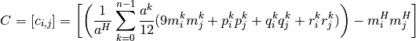
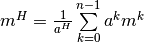
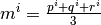
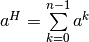
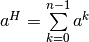
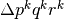
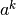
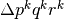
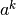

eigenvector¶
Calculates the eigenvectors and eigenvalues of the covariance matrix of all points in current object’s mesh. The eigenvector with the largest eigenvalue corresponds to the first axis defined in axis order, second largest to second axis and third largest to third axis. Command is used by alignObj and exportData. Command only accepts ‘transform’ nodes and will only be applied to the first object of the current selection.
The calculation of the covariance matrix is defined as:

where  is the centroid of the convex hull with  as centroid of triangle  and the surface of the convex hull . The area of triangle
and the surface of the convex hull . The area of triangle  with its is vertices  is defined as .
with its is vertices  is defined as .
The eigenvectors and eigenvalue of  are calculated using numpy.linalg.eigh.
are calculated using numpy.linalg.eigh.
see also: alignObj, exportData
command: cmds.eigenvector([obj], ao = ‘yzx’, f = False)
- Args:
obj: string with object’s name inside maya axisOrder(ao): string to define axis order of eigenvectors (default ‘yzx’) fast (f): boolean flag to indicate if calculation should use convex hull; faster but inaccurate (default False)
| returns: | list of 9 float values corresponding to first eigenvector ([0:3]), second eigenvector ([3:6]) and third eigenvector ([6:9]) |
|---|
- Example:
cmds.polyTorus() # Result: [u'pTorus1', u'polyTorus1'] # cmds.eigenvector() # Result: [5.465342261024642e-10, -0.609576559498125, 0.7927272028323672, 1.0, 1.3544498855821985e-09, 3.520841396209562e-10, -1.288331507658196e-09, 0.7927272028323671, 0.6095765594981248] #